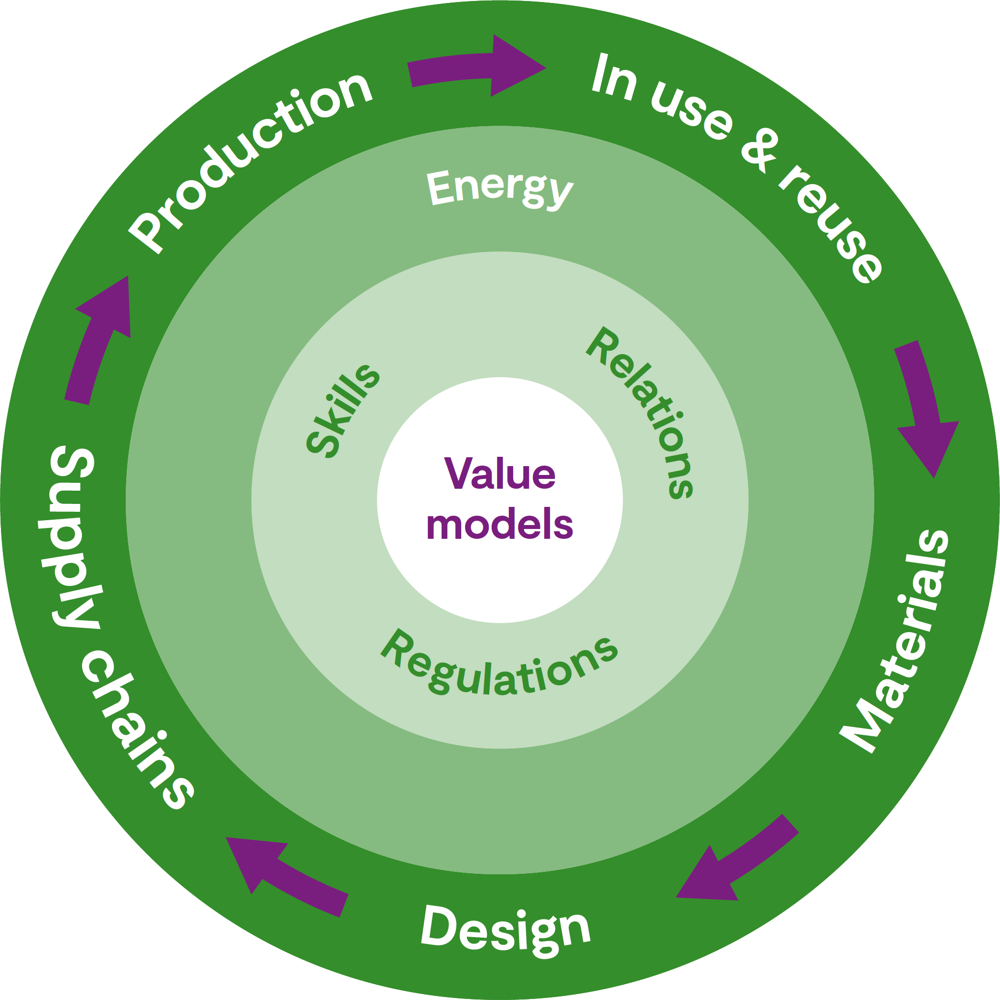

Content
Strategic imperatives
net zero and resource efficient
resilient and responsive
technologically advanced and digital
Core areas
materials
design
supply chains
production
in use & reuse
Enabling areas
energy
regulations & policy
skills
relations
value models

Selected projects
10062170 - DEsign MEthodology for fibre steered Composite structures
10062972 - Project TUPLA - traceability of used PLA across the supply chain (…)
10063003 - MAPPED: Modelling of Alloy Process Parameters for Enhanced Development
10063003 - (…) L-Lactic Acid Production from UK Food Wastes (SCET-LAFOW)
10064316 - Paintbox: Development of Printable Direct-gloss Paint Material
10077783 - Additive Manufacturing for Repair and Re-use of Castings - AdCast
10078443 - (…) Agroforestry-derived Resins to Materials for Automotive (…) (CARMA)
10080750 - Pure CuRE (Pure Copper Resource Efficiency)
10081046 - (…) design and additive manufacturing of lattice metamaterial (…) (METAMAT)
10081270 - ENIGMATEC: Efficient Netshape manufacturInG for reduced MAterials waste (…)